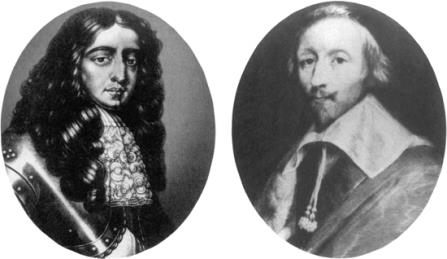

Oranjlı William Kardinal Richelieu
Tarihçilerin Avrupa güç dengesi sistemi olarak tanımladıkları sistem, Ortaçağ’ın evrensellik umudunun çöküşünden sonra XVII. yüzyılda ortaya çıktı. Bu umut, Roma İmparatorluğu’nun ve Katolik Kilisesi’nin geleneklerini bir araya getiren bir dünya düzeni kavramı getiriyordu. Dünya, göklerin bir yansıması gibi düşünülüyordu. Tek bir Tanrı’nın cennette egemen olması gibi, bir imparator, laik bir dünyayı ve bir papa da Evrensel Kilise’yi yönetecekti.
Almanya ve Kuzey İtalya’nın feodal devletleri, bu ruh hali içinde, Kutsal Roma imparatoru ‘nün yönetimi altında gruplaşmışlardı. XVII. yüzyıl ilerledikçe, bu imparatorluk, Avrupa’yı egemenliği altına alma potansiyeline sahip oldu. Ren Nehri’nin uzak batısında olan sınırları ile Fransa ve Büyük Britanya, imparatorluğa göre çevre devletleri konumundaydılar: Eğer Kutsal Roma imparatorluğu, teknik olarak egemenliği altındaki tüm bu topraklar üzerinde merkezi kontrol kurmayı başarsaydı, Batı Avrupa devletlerinin onunla ilişkisi de, Çin’in komşularının Orta Krallık’la, Fransa’nın Vietnam veya Kore’yle ve Büyük Britanya’nın Japonya’yla ilişkilerine benzerdi.
Ancak Ortaçağ’ın büyük bölümünde, Kutsal Roma imparatorluğu, bu merkezi kontrol düzeyine ulaşamadı. Bir neden, bu derece geniş toprakları birbirine bağlamayı zorlaştıran bir unsur olarak, yeterli ulaşım ve iletişim sistemlerinin yokluğuydu. Fakat en önemli neden, Kutsal Roma İmparatorluğu’nun, kilisenin yönetimi ile hükümetin yönetimini birbirinden ayırması idi. Bir firavun veya Sezar’ın aksine, Kutsal Roma imparatoru, onlara atfedilen ilahi niteliklere sahip bir imparator olarak görülmezdi. Batı Avrupa dışında her yerde, hatta Doğu Kilisesi tarafından yönetilen bölgelerde bile, din ve hükümet, her birine yapılacak önemli atamaların, merkezi hükümetin elinde olması sayesinde birleştirilmişti; dini yetkililer, Batı Hıristiyanlığının bir hak olarak talep ettiği özerk statüyü kurmak için ne gerekli araçlara, ne de otoriteye sahipti.
Batı Avrupa’da, papa ile imparator arasındaki olası ve zaman zaman da fiili anlaşmazlık, modern demokrasinin temeli olan anayasacılık ve kuvvetler ayrılığı prensibi için gerekli şartları yarattı. Bu durum, çeşitli feodal yöneticilerin, çatışan taraflardan bedelini alarak, özerkliklerini artırmalarına olanak tanıdı. Sonuçta bu durum dukalıklar, kasabalar, şehirler ve piskoposluklar şeklinde parçalara bölünmüş bir Avrupa’nın ortaya çıkmasına neden oldu. Her ne kadar teorik olarak bütün feodal lordlar, imparatora sadakat göstermek zorunluluğunda iseler de, uygulamada bildiklerini okudular. Çeşitli hanedanlar, tahtta hak iddia ettiler ve merkezi otorite hemen hemen ortadan kalktı, imparatorlar, bunu gerçekleştirme güçleri olmadığı halde, eski evrensel yönetim hayalini bırakmadılar. Evrensel Kilise’nin birer parçası olmaya devam etmekle birlikte, kanatlarda kalan Fransa, Büyük Britanya ve İspanya ise, Kutsal Roma İmparatorluğu’nun otoritesini kabul etmediler.
XVI. yüzyılda Habsburg Hanedanı, imparatorluk tahtındaki iddiasını ortaya koyup, akıllı evliliklerle İspanya tacını ve geniş topraklarını elde edinceye kadar, Kutsal Roma İmparatoru’nun evrensel taleplerini, politik bir sisteme dönüştüremedi. XVI. yüzyılın ilk yarısında imparator V. Charles, imparatorluk otoritesini bir merkezi Avrupa imparatorluğu ümidini artıran bir noktaya kadar canlandırdı. Bu imparatorluk, bugünkü Almanya, Avusturya, Kuzey İtalya, Çek Cumhuriyeti, Slovakya, Macaristan, Doğu Fransa, Belçika ve Hollanda’yı sınırları içine alıyordu. Bu gruplaşma, Avrupa’da güç dengesine benzeyen herhangi bir oluşumun ortaya çıkmasını önleyecek kadar güçlü idi.
Tam da bu sırada Papalığın Reformasyon’un etkisi altında zayıflaması, egemen bir Avrupa imparatorluğu kurulması ümidini ortadan kaldırdı. Papalık güçlü olduğu zaman, Kutsal Roma imparatorluğu için sürekli bir sorun ve çetin bir rakipti. XVI. yüzyılda zayıflayınca, imparatorluk düşüncesine karşı aynı derecede zararlı bir kurum haline geldi, imparatorlar, kendilerini Tanrı’nın yeryüzündeki temsilcisi olarak görmek ve başkalarının da onları bu gözle görmeleri arzusunda idiler. Fakat XVI. yüzyılda imparator, Protestan topraklarında Tanrı’nın yeryüzündeki temsilcisinden çok yozlaşmış bir papaya bağlı Viyanalı bir savaşçı olarak algılanmaya başladı. Reformasyon, asi prenslere, hem dini, hem de politik alanda, yeni bir hareket serbestliği tanıdı. Roma ile bağlarının kopması, dinsel evrensellikle de bağlarının kopması anlamına geliyordu; Habsburg imparatoru ile mücadeleleri de, prenslerin, imparatorluğa sadakatlerini, artık dini bir görev olarak görmediklerini gösterdi.
Birlik kavramının çöküşü ile birlikte, Avrupa’da ortaya çıkan yeni devletler dinsel sapkınlıklarını haklı çıkarmak ve aralarındaki ilişkileri düzenlemek için bazı prensiplere gereksinim duydular. Aradıklarını da raison d’état ve güç dengesi kavramlarında buldular. Bunlar birbirine bağlı kavramlardır. Raison d’état, devletin iyiliğinin, onu ilerletmek için kullanılan her türlü aracı haklı çıkardığını söyler. Orta Çağ’ın evrensel ahlak nosyonunun yerini ulusal çıkar, kendi bencil çıkarlarını kovalayan her devletin, bir şekilde bütün devletlerin güvenlik ve gelişmesine katkıda bulunduğu açıklamasıyla, evrensel monarşi nostaljisinin yerini de, güç dengesi aldı.
Bu yeni yaklaşımın ilk ve en kapsamlı formülü, aynı zamanda Avrupa’nın ilk ulus-devletlerinden birisi olan Fransa’dan geldi. Fransa, Kutsal Roma İmparatorluğu’nun yeniden canlandırılmasından en çok zarara uğrayacak ülke idi; çünkü, eğer modern terminolojiyi kullanmak gerekirse, Fransa imparatorluk tarafından “Finlandiyalılaştırılmış” duruma düşürülebilirdi. Fransa, dini kısıtlamalar zayıflayınca, Reformasyon’un komşuları arasında yarattığı rekabeti kullanmaya başladı. Fransız yöneticiler, Kutsal Roma İmparatorluğu’nun gittikçe zayıflamasının (hatta dağılmasının), Fransa’nın güvenliğini artıracağını ve eğer talihi yaver giderse, Fransa’ya doğuya doğru genişleme olanağı tanıyacağını fark ettiler.
Bu Fransız politikasının baş aktörü, asla tahmin edilemeyecek birisiydi: Kilise’nin bir prensi, Armand Jean du Plesis, Kardinal Richelieu, 1624-1642 yılları arasında Fransa’nın başbakanı. Kardinal Richelieu’nün ölüm haberini alan Papa VII. Urban’ın şöyle dediği rivayet edilir: “Eğer Tanrı varsa, Kardinal Richelieu’nün hesabını vereceği çok şey olacaktır. Yoksa... o zaman başarılı bir yaşamı olmuştur.”{58} Mezar kitabesi olabilecek bu söz, zamanın temel tabularını görmezden gelerek ve gerçekte onları aşarak büyük başarılar elde eden bu devlet adamını şüphesiz memnun ederdi.
Pek az devlet adamı, tarih üzerinde onun kadar etkili olmuştur. Richelieu, modern devlet sisteminin babasıdır. Raison d’état kavramını o yarattı ve kendi ülkesinin çıkan için acımasızca kullandı. Onun gözetimi altında, raison d’état Fransız politikasının temel ilkesi olarak Ortaçağ’ın evrensel moral değerlerinin yerini aldı.
Başlangıçta, Habsburgların Avrupa’ya egemen olmasını önlemeye çalıştı. Fakat bıraktığı miras, bundan sonraki iki yüzyıl boyunca haleflerinde, Avrupa’da Fransız üstünlüğünü kurma isteği uyandıran bir mirastı. Bu isteklerin başarısızlığından, ilk önce yaşamın bir gerçeği, sonra da uluslararası ilişkileri örgütleme sistemi olarak bir güç dengesi kavramı ortaya çıktı.
Richelieu 1624’te, Habsburg Kutsal Roma imparatoru II. Ferdinand’ın, Katolik dininin evrenselliğini canlandırmaya, Protestanlığı ezmeye ve Orta Avrupa prensleri üzerinde imparatorluk otoritesi kurmaya çalıştığı bir dönemde işbaşına geldi. Bu süreç, yani karşı-reformasyon, 1618’de Orta Avrupa’da patlak veren ve insanlık tarihinin en acımasız ve en yıkıcı savaşlarından birine dönüşen Otuz Yıl Savaşları’na yol açtı.
1618’de, çoğu Kutsal Roma İmparatorluğu’nun bir parçası olan Orta Avrupa’nın Almanca konuşan toprakları, iki silahlı kampa ayrılmıştı: Protestanlar ve Katolikler. Savaşın fitili aynı yıl Prag’da ateşlendi ve çok geçmeden Almanya’nın tümü çatışmanın içine çekildi. Almanya’nın kan kaybı gittikçe arttığından, prenslikler dış işgalciler için savunmasız birer kurban durumuna düştüler. Çok geçmeden Danimarka ve İsveç orduları, Orta Avrupa’da ilerlemeye başladılar; hemen arkasından Fransız ordusu çatışmaya katıldı. 1648’de savaş sona erdiği zaman, Orta Avrupa yerle bir edilmiş ve Almanya nüfusunun neredeyse üçte birini kaybetmişti. Bu trajik çekişme sırasında Kardinal Richelieu, diğer Avrupa devletlerinin de izleyen yüzyıl içinde kabul ettikleri raison d’état prensibini Fransız politikasına aşıladı.
Kilisenin bir prensi olarak Richelieu’nün, Ferdinand’ın Katolik dinini, eski haline getirme girişimini onaylaması gerekirdi. Fakat Richelieu, Fransız ulusal çıkarını, her türlü dini amacın üzerinde tuttu. Bir kardinal olması, Richelieu’nün Habsburgların Katolik dinini yeniden kurma girişimini, Fransa’nın güvenliğine yönelik jeopolitik bir tehdit olarak görmesini engellemedi. Richelieu’ye göre, bu dinsel bir eylem değil, Avusturya’nın Orta Avrupa’da üstünlük sağlamak ve Fransa’yı ikinci sınıf bir statüye düşürmek için yaptığı siyasi bir manevraydı.
Richelieu’nin korkusu sebepsiz de değildi. Avrupa haritasına bir göz atmak, Fransa’nın her taraftan Habsburg toprakları ile çevrili olduğunu görmeğe yetiyordu: Güneyde İspanya, güneydoğuda çoğunlukla İspanya tarafından yönetilen Kuzey İtalya şehir-devletleri, doğuda yine İspanya’nın kontrolünde olan Franche-Comte (bugünkü Lyon ve Savoy civarı) ve kuzeyde İspanyol Hollandası. İspanyol Habsburglarının kontrolünde olmayan birkaç sınır ise, ailenin Avusturya kolunun yönetimi altında idi. Bugünkü Alsace bölgesi olan Ren Nehri kıyısı boyunca uzanan ve stratejik olarak önemli olan topraklar gibi Lorraine Dukalığı da Avusturyalı Kutsal Roma İmparatoru’na sadakatle bağlıydı. Eğer Kuzey Almanya da Habsburg yönetimi altına girerse, Fransa, Kutsal Roma İmparatorluğu’na göre tehlikeli bir şekilde zayıflayacaktı.
Richelieu, İspanya ve Avusturya’nın, Fransa’yla aynı Katolik inancı paylaşmalarında da çok az teselli buldu. Tersine, karşı-Reformasyon’un başarılı olmasını önlemek, tam da Richelieu’nün yapmakta kat’i surette kararlı olduğu şeydi. Bugün ulusal güvenlik çıkarı, o günlerde ise, ilk kez olarak raison d’état olarak isimlendirilen şeyin peşinde olan Richelieu, Protestan prenslerin tarafında olmaya ve Evrensel Kilise’deki hizipleşmeden yararlanmaya hazırdı.
Habsburg imparatorları, aynı kurallara göre hareket etmiş veya ortaya çıkan raison d’état dünyasını anlamış olsalardı, Richelieu’nün en çok korktuğu şeyi başarmak için ne kadar iyi bir durumda olduklarını göreceklerdi. Bu da, Avusturya’nın üstünlüğü ve Kutsal Roma İmparatorluğu’nun kıta üzerinde egemen bir güç olarak ortaya çıkmasıydı. Ancak yüzyıllar boyunca Habsburgların düşmanları, hanedanın taktik gerekliliklere uyum sağlamaktaki katılığından veya eğilimleri anlamaktaki başarısızlığından yararlanmışlardır. Habsburg yöneticileri, prensip sahibi kimselerdi. Yenilgi hariç, inançlarından hiçbir zaman ödün vermemişlerdir. Dolayısıyla bu politik maceranın daha başlangıcında, Kardinalin acımasız entrikalarına karşı tümden savunmasız durumdaydılar.
Richelieu’nün karşıtı olan imparator Ferdinand neredeyse kesin olarak raison d’état’yı hiç duymamıştı. Duymuş olsaydı bile, bunu küfür sayarak reddedecekti; çünkü kendi laik misyonunu Tanrı’nın iradesini yerine getirmek olarak görüyordu ve Kutsal Roma imparatoru unvanındaki “kutsal” kelimesini, daima üzerine basarak söylerdi, ilahi amaçlara, ahlaki araçlardan başka bir şeylerle ulaşılabileceğini asla kabul edemezdi. Kardinal için olağan şeyler olan Protestan İsveçlilerle veya Müslüman Türklerle anlaşma yapmak gibi bir şeyi asla düşünemezdi. Ferdinand’ın danışmanı Cizvit Lamormaini, İmparator’un görüşünü şöyle özetliyor:
“Bugünlerde çok yaygın olan yanlış ve dejenere politikaları daha en başta lanetledi. Böyle politikaları uygulayanlar yalanla, Tanrı ve dinin kötüye kullanılmasıyla uğraştıklarından bunlarla ilişki kurulamayacağı görüşündeydi. Ona göre, Tanrı’nın lütfettiği krallığı, Tanrı’nın reddettiği araçlarla kuvvetlendirmeğe çalışan birisi, büyük bir aptallık etmiş olurdu.”{59}
Bu kadar katı değer kurallarına bağlı bir yöneticinin, bırakın pazarlık yaparken manevra yapmayı, uzlaşma yapması bile olanaksızdı. 1596’da, Ferdinand henüz arşidük iken şu açıklamayı yapmıştı: “İş dini konulara gelince, mezhepçilere herhangi bir taviz vermek yerine, ölümü yeğlerim.”{60} İmparatorluğunun zararına da olsa, kuşkusuz sözünde durmuştur, imparatorluğun gelişmesinden çok, Tanrı’nın iradesine boyun eğmekle ilgilenen imparator, onlara yardımda bulunmak çıkarına olmasına karşın, Protestanlığı ezmeyi kendisi tarafından yerine getirilmesi gerekli bir görev saymıştır. Modern bir deyişle, Ferdinand tam bir fanatikti, İmparator’un danışmanlarından birisi olan Caspar Scioppius’un sözleri İmparator’un inançlarına ışık tutmaktadır: “Sapkınların öldürülmesini isteyen Tanrı’nın sesine kulak vermeyen krala lanet olsun. Siz kendiniz için değil, ancak Tanrı için savaşmaksınız” (Bellum non tuum, sed Dei esse statuas).{61} Ferdinand için devlet, dine hizmet için vardır. Yoksa, din devlete hizmet etmez. “Bizim kutsal itirafımız için önemli olan devlet işlerinde, insan her zaman insani düşünceleri göz önüne alamaz; insan daha çok... Tanrı’dan... ümit etmeli ve yalnız ona güvenmelidir.”{62}
Richelieu, Ferdinand’in dine bağlılığını stratejik bir sorun olarak kabul etti. Her ne kadar kendisi de dindar idiyse de, bakan olarak görevlerine tamamen laik bir gözle bakıyordu. Bağışlanma, kişisel amacı olabilirdi; fakat bir devlet adamı olan Richelieu için bu amaç konuyla ilgisizdi. Bir keresinde “insan ölümsüzdür; kurtuluşu bu dünyadan sonradır.” demişti. “Devlet ise ölümsüz değildir; kurtuluşu ya şimdi sağlanır veya hiç bir zaman.”{63} Başka bir deyişle, devletler doğru olanı yaptıklarından dolayı başka bir dünyada ödüllendirilmezler; gerekeni yapabilmek için güçlü oldukları zaman ödüllendirilirler.
Richelieu, 1629’da, yani savaşın on birinci yılında, şartların Ferdinand’a sunduğu fırsatı onun yerinde olsa elinden kaçırmazdı. Protestan prensler, istedikleri dini seçmekte serbest olmak ve Reformasyon zamanında elde ettikleri kilise topraklarını korumalarına izin verilmesi şartıyla, Habsburg politik üstünlüğünü kabul etmeğe hazırdılar. Fakat Ferdinand, politik gereklilikler için dini sıfatını ikinci plana atamazdı. Kendisi için büyük bir zafer sayılabilecek ve imparatorluğunu güvence altına alabilecek böyle bir öneriyi reddederek Protestan sapkınlığı ezmeye kararlıydı. Nitekim Protestan prenslerden, 1555’ten bu yana kiliseden alınmış bütün toprakların geri verilmesini isteyen Toprakların İade Emri’ni çıkardı. Bu davranış, fanatizmin, çıkar üzerine zaferinin, inancın, politik çıkar hesaplarının üstüne çıkmasının klasik bir örneğiydi. Böylece, savaşın sonuna kadar devamını da sağlamış oldu.
Durum böyle olunca, Richelieu Orta Avrupa iyice tükenene kadar savaşı uzatmaya karar verdi, iç politikaya ilişkin dini kuralları da bir tarafa attı. 1629 Alais Bağışı’nda, Fransız Protestanlarına ibadet özgürlüğü tanıdı ki, bu özgürlük, tam da İmparator’un Alman prenslerine vermemek için savaştığı özgürlüktü. Böylece ülkesini Orta Avrupa’yı parçalayan iç karışıklıklara karşı koruyan Richelieu, Ferdinand’ın dinsel ateşini de Fransa’nın ulusal hedeflerini gerçekleştirmek için kullanmaya koyuldu.
Habsburg İmparatoru’nun ulusal çıkarlarını anlamaktaki yeteneksizliği ve böyle bir kavramın geçerliliğini kabul etmeyi dahi reddetmesi, Fransa’nın başbakanına Protestan Alman prenslerini Kutsal Roma İmparatoru’na karşı desteklemek ve onlara para yardımı yapmak fırsatını verdi. Kutsal Roma İmparatoru’nun merkezileştirme amacına karşılık, Protestan prenslerin özgürlüklerinin koruyucusu rolünü üstlenmek, Fransa’nın yüksek rütbeli bir din adamı ve onun Fransız Katolik Kralı XIII. Louis için asla akla gelecek bir şey değildi. Kilisenin bir prensinin, İsveç’in Protestan Kralı Gustav Adolf a Kutsal Roma İmparatoru ile savaşmak için para yardımı yapması, yüz elli yıl sonraki Fransız Devrimi karışıklıkları kadar devrimci izler bıraktı.
Dinsel ateş ve ideolojik fanatizmin hâlâ egemen olduğu bir yüzyılda, ahlaki koşullardan arındırılmış, serinkanlı bir dış politika, çölde üstü karla kaplı Alp Dağı’nı bulmak kadar olmayacak bir şeydi. Richelieu’nün amacı, Fransa’nın etrafının sarılmışlığına bir son vermek, Habsburgları tüketmek ve Fransa’nın sınırlarında, özellikle de Alman sınırında büyük bir gücün oluşmasına engel olmaktı. Anlaşma yapmak için tek kriteri, Fransa’nın çıkarlarına hizmet etmesi idi. Nitekim önce Protestan devletlerle, sonra da Müslüman Osmanlı İmparatorluğu ile anlaşma yaptı. Savaşı uzatmak ve savaşanları tüketmek için düşmanlarının düşmanlarına para yardımları yaptı, ayaklanmaları kışkırttı, para ile destekledi, hanedan kavgaları ve hukuki anlaşmazlıklardan oluşan olağanüstü bir mekanizmayı harekete geçirdi. O kadar başarılı oldu ki, 1618’de başlayan savaş onlarca yıl sürüp gitti. Sonunda tarih, bu savaşlara daha uygun bir isim bulamadığı için uzunluğundan dolayı Otuz Yıl Savaşları dedi.
Almanya harap olurken, Fransa bir kenarda bekledi. 1635’te, savaşan tarafların tükenmişliği, bir defa daha düşmanlığın son bulmasına ve bir uzlaşma barışı yapılmasına sebep oldu. Richelieu’nün Fransız Kralı’nın, Habsburg İmparatoru kadar güçlü olana kadar uzlaşmada hiçbir çıkarı yoktu. Savaşın on yedinci yılında, amacına ulaşmak için Protestan prenslerin yanında kavgaya girmenin gerekliliğine hükümdarını ikna etti ve bunu da Fransa’nın gittikçe büyüyen gücünü kullanmak için bundan daha iyi fırsat olamayacağına dayanarak yaptı:
“Devletimize düşman olan kuvvetleri on yıl boyunca, müttefiklerimizin kuvvetleri ile ve elinizi kılıcınıza değil de, cebinize atarak kontrol altında tutmak, büyük bir basireti gösteriyorsa, müttefiklerimizin artık siz olmadan var olamayacaklarını anladığınız an savaşa katılmak da cesaret ve büyük zekâya işaret eder. Bu gösterir ki, krallığınızın barışını sağlarken, parayı toplamada büyük çaba sarf eden ve sonra bunu nasıl harcayacağını bilen ekonomistler gibi hareket etmişsiniz.”{64}
Bir raison d’état politikasının başarılı olması, her şeyden önce güç ilişkilerinin doğru değerlendirilmesine bağlıdır. Evrensel değerler, algılanma biçimlerine göre değerlendirilir ve devamlı yorumlanmaları gereksinimi yoktur; gerçekte bu değerler sürekli yeniden yorumlanmayla ters düşerler. Gücün hudutlarını belirlemek ise, deneyim ve basiretin bir bileşimini ve koşullara göre devamlı ayarlamayı gerektirir. Teorik yönden güç dengesi kuşkusuz hesaplanabilir olmalıdır; ancak uygulamada bunu gerçekçi olarak yapmak çok zordur. Daha da karmaşık olan, kendi hesaplamalarının, diğer devletlerin hesaplamaları ile uyumunu sağlamaktır ki, bu uyum, güç dengesinin işlemesinin sağlanması için bir önkoşuldur. Dengenin doğası üzerinde oluşacak konsensüs, çoğunlukla zaman zaman çıkan çatışmalarla ortaya çıkar.
Richelieu’nün, hemen hemen matematik bir dakiklikle araçların amaçlara uygulanmasının mümkün olduğuna inancı olduğu kadar, kendisinin bunu yapma yeteneği olduğuna da inanıyordu. Political Testament’ta (Politik Vasiyet) şöyle yazıyor: “Mantık, desteklenecek şey ile onu destekleyecek kuvvetin geometrik olarak orantılı olmasını gerektirir.”{65} Yazgısı, Richelieu’yü kilisenin prensi yaptı; inancı, onun insan eylemlerinin bilimsel olarak hesaplanabileceğini öğreten Descartes ve Spinoza gibi rasyonalistlerin entelektüel arkadaşlığına itti; fırsat ona, uluslararası düzeni ülkesinin yararına dönüştürme olanağını sağladı. Bir devlet adamının kendisi hakkındaki tahmini bu kez doğru çıktı. Richelieu kendi amaçlarını çok iyi biliyordu; ama düşüncelerini ve taktiklerini, stratejisine göre ayarlayamasaydı başarılı olamazdı.
Bu kadar yeni ve bu kadar soğukkanlı bir doktrine karşı, karşıt görüşlerin ortaya çıkmaması olanaksızdı. Sonraki yıllarda bu derece yaygın olan güç dengesi doktrini, ahlaki kaidelerin önceliği üzerine kurulu evrensel geleneğe bir saldırı oluşturuyordu. En önemli eleştirilerden birisi, bütün ahlaki bağlarını koparmış bir politikaya şiddetle saldıran tanınmış ilim adamı Jausenius’dan geldi:
“Laik ve fani bir devletin, din ve kiliseden daha üstün olduğuna mı inanıyorlar? En koyu Hıristiyan kral, ülkesinin yönetiminde, aynı zamanda İsa’nın ve Tanrı’nın ülkesini de geliştirip korumasını gerektiren hiçbir şey olduğuna inanmamak mı? Tanrı’ya şunu söylemeye cesaret edebilir mi? Benim devletim korunduğu ve her türlü tehlikeden uzak olduğu sürece, bırak insanlara Tanrı’ya tapmayı öğreten dinin, gücün ve şanın yıkılsın ve yok olsun.”{66}
Elbette bunlar, Richelieu’nün bütün çağdaşlarına ve belki de Tanrı’sına da söylediği sözlerdi. Richelieu’nün getirdiği devrimin boyutu o kadar büyüktü ki, kendisini eleştirenler tarafından reductio ad absurdum (kendisini yalanlayacak kadar ahlak dışı ve tehlikeli bir görüş) olarak değerlendirilen şey, aslında Richelieu’nün görüşlerini özetleyen çok uygun bir sözdü. Kral’ın başbakanı olarak, din ve ahlakı, yol gösterici ışığı olan raison d’état’ya göre alt düzeye itti.
Üstatlarının bu yolunu tam olarak benimsediklerini gösteren Richelieu’nün taraftarları, onu eleştirenlerin bu eleştirilerini reddettiler. Ulusal çıkar politikasının en yüksek ahlak kuralını temsil ettiğini, ahlak prensiplerini çiğneyenin o değil, Richelieu’yü eleştirenler olduğunu ileri sürdüler.
Eleştirileri resmen reddetmek, Richelieu’nün isteğiyle, krallık yönetimine yakın bir bilim adamı olan Daniel de Priezac’a düştü. Klasik Makyavelvari bir üslup kullanan Priezac, görünüşte sapkınlığın yaygınlaşmasını kolaylaştıran politikaları uygulamak suretiyle, Richelieu’nün ölümcül bir günah işlediği iddiasına karşı çıktı. Richelieu’nün değil, tersine onu eleştirenlerin ruhlarının tehlikede olduğunu söyledi. Avrupa Katolik güçleri arasında en saf ve en dinine bağlı olan ülkenin Fransa olması dolayısıyla, Fransa’nın çıkarlarına hizmet eden Richelieu, aynı zamanda Katolik dininin çıkarlarına da hizmet etmekteydi.
Priezac, Fransa’nın böyle benzersiz bir dinsel görevle görevlendirildiği kanısına nasıl vardığını açıklamadı. Bununla beraber, Fransız devletinin güçlendirilmesinin Katolik Kilisesi’nin de çıkarına olduğu görüşü, bu varsayımı takip eden doğal sonuçtu. O halde Richelieu’nün politikası da son derece ahlaklıydı. Gerçekte, etrafının Habsburglar tarafından çevrilmiş olması, Fransa’nın güvenliğine karşı o kadar büyük bir tehlike oluşturuyordu ki, bu çemberin kırılması şarttı ve Fransa Kralı’nın bu ahlaki amacı gerçekleştirmek için seçtiği metot ne olursa olsun onu temize çıkarırdı:
“Barışı, savaş yoluyla sağlamak isteyen kişi bunu yaparken isteklerine aykırı bir şey olursa, bu onun iradenin değil, yasaları çok sert ve emirleri çok acımasız olan zorunluluğun bir suçudur... Bir savaş, eğer savaş açma nedenleri haklıysa, haklıdır... O halde, göz önünde tutulması gereken temel faktör, başvurulan araçlar değil, iradedir... Suçluyu cezalandırmak isteyen kimse, bazen kusuru olmayan bir masumun da kanını dökebilir.”{67}
Lafı dolandırmadan konuşmak gerekirse, amaç kullanılan araçları meşrulaştırır.
Richelieu’yü eleştiren bir başkası, Mathieu de Morgues, kardinali dini, dünya işlerine alet etmekle suçladı. “Üstadınız Machiavelli, istekleri yerine gelinceye kadar, eski Romalılara, dinin nasıl kullanılacağını, ona nasıl şekil verileceğini, nasıl açıklanacağını ve nasıl uygulanacağını gösterdi.”{68}
De Morgues’in söyledikleri, Jansenius’un söylediklerinin aynısı idi ve etkisizdi. Richelieu, gerçekten de bu tanımlanan şeyi yapıyordu ve dini, tam iddia edildiği gibi kullanıyordu. Kuşkusuz kendisi, tıpkı Machiavelli’nin yaptığı gibi, dünyayı nasıl ise öyle analiz ettiğini söylerdi. Machiavelli’nin de söylediği gibi, ahlaki hassasiyetin daha saf olduğu bir dünyayı yeğleyebilirdi; fakat tarihin kendi devlet adamlığı hakkında, ortaya çıkan koşullan ve faktörleri nasıl değerlendirdiğine bakarak hüküm vereceğine inanırdı. Gerçekten de bir devlet adamının değerlendirilmesinde, kendisi için belirlediği amaçları gerçekleştirmesini bir kriter olarak alırsak, Richelieu modern tarihin yeni ufuklar açan bir şahsiyeti olarak anılmalıdır. Çünkü ardında, bulduğu dünyadan büyük ölçüde farklı bir dünya bıraktı ve Fransa’nın sonraki üç yüzyıl izleyeceği bir politikayı başlattı.
Bu şekilde, Fransa Avrupa’da sözü geçen devlet oldu ve topraklarını büyük ölçüde genişletti. Otuz Yıl Savaşları’na son veren 1648 Westphalia Barışı’nı izleyen yüzyılda, raison d’état doktrini Avrupa diplomasisinin yol gösteren prensibi oldu. Ne kendisinden sonraki yüzyılların devlet adamlarının kendisine saygı duymaları, ne de düşmanı II. Ferdinand’ın kaderi olan unutulma, kardinali şaşırtırdı. Richelieu hayalperest bir adam değildi. Political Testament’ında şöyle yazıyor: “Devlet işlerinde kim güçlü ise, çoğu zaman o haklıdır ve kim güçsüz ise, dünyanın çoğunluğunun gözünde haksız konumuna düşmekten kendisini zor korur.” Aradan geçen yüzyıllarda aksi nadiren ileri sürülmüş bir kural.{69}
Richelieu’nün Orta Avrupa tarihi üzerindeki etkisi ise, Fransa adına kazandığı başarıların tam tersidir. O birleşmiş bir Orta Avrupa’dan çok korkmuş ve bunun oluşmaması için elinden geleni yapmıştır. Büyük bir olasılıkla, Almanya’nın birliğini iki yüzyıl kadar geciktirmiştir. Otuz Yıl Savaşları’nın ilk evresi, tıpkı İngiltere’nin Normandiyalı bir hanedanın vesayeti altında bir ulus-devlet olması ve birkaç yüzyıl sonra Fransa’nın da Capetlerle aynı yolu izlemesi gibi, Habsburgların da Almanya’yı kendi hanedanlıkları altında birleştirme çabası olarak görülebilir. Richelieu Habsburgları engelledi ve Kutsal Roma İmparatorluğu’nu üç yüzden çok ve her biri bağımsız bir dış politika uygulamakta özgür prensliğe böldü. Almanya bir ulus-devlet olamadı; küçük hanedan kavgaları ile uğraşırken içine dönük bir devlet oldu. Sonuç olarak, ulusal bir politik kültür geliştiremedi ve Bismark, XIX. yüzyılda Almanya’yı birleştirene kadar, kurtulamadığı bir köylülük içinde dondu kaldı. Almanya birçoğu Fransa tarafından başlatılan Avrupa savaşlarının savaş meydanı haline dönüştü ve Avrupa’nın denizaşırı sömürgecilik akımının da ilk dalgasını kaçırmış oldu. Sonunda birleştiğinde, Almanya’nın ulusal çıkarlarını tanımlamada o kadar az deneyimi vardı ki, bu yüzyılın en kötü trajedilerinin çoğunu o yarattı.
Ancak ilahlar, çoğu zaman insanı, arzularını eksiksiz yerine getirerek cezalandırırlar. Kardinal tarafından, karşı-Reformasyon hareketinin başarılı olması halinde, Fransa’nın gittikçe merkezileşen Kutsal Roma İmparatorluğu’nun bir uzantısı durumuna düşeceği şeklinde yapılan analiz doğru idi; özellikle onun da görmüş olduğu gibi gelmiş olan ulus-devlet çağında bunun böyle olacağı açıktı. Wilson idealizminin baş düşmanı gerçeklikle bu idealizmin uygulanması arasındaki uçurum ise, raison d’état’nın aşırı büyüme tehlikesiydi.
Richelieu’nün raison d’état kavramının kendi içinde sınırları yoktu. Devletin çıkarları sağlanmış kabul edilene kadar insan ne kadar ileri gidebilirdi? Güvenliği sağlamak için kaç savaş yapmak gerekiyordu? Bencil olmayan bir politikayı benimseyen Wilson idealizmi, devlet çıkarlarının göz ardı edilmesi tehlikesiyle sürekli karşı karşıyadır; Richelieu’nün raison d’état’sı ise, kendi kendini de yok edebilecek tours de force’u (güç gösterisi) eylemleriyle tehdit etmektedir. XIV. Louis tahta geçtikten sonra Fransa’ya olan da buydu. Richelieu, Fransız krallarına, sınırlarında zayıf ve bölünmüş bir Almanya ile çökmekte olan bir İspanya bulunan kuvvetli bir devlet bırakmıştı. Fakat XIV. Louis güvenlikle huzur bulmadı; bu güvenlikte yeni topraklar fethetmek için bir fırsat gördü. Raison d’état’yı aşırı istekle takip eden XIV. Louis, Avrupa’nın geri kalan bölümünü alarma geçirdi ve sonuçta bu isteklerini engelleyen bir Fransız karşıtı koalisyonun ortaya çıkmasına yol açtı.
Yine de Richelieu’den iki yüzyıl sonra Fransa, Avrupa’da en etkili ülkeydi ve bugüne kadar da uluslararası politikada önemli bir faktör olarak kaldı. Başka herhangi bir ülkeden ancak birkaç devlet adamı bu kadar başarılı olmuştur. Ancak Richelieu’nün en büyük başarıları, Ortaçağ’ın ahlaki ve dini kısıtlamalarını bir hamlede kaldırıp atan tek devlet adamı olduğu zamanlarda geldi. Richelieu’nün yerine gelenler ise, birçok devletin onun varsayımlarına dayanarak hareket ettiği bir sistem devralmışlardır. Böylece Fransa, Richelieu zamanındaki Ferdinand gibi, ahlaki düşüncelerle kısıtlanmış olan düşmanlarının olması avantajını yitirmiştir. Bütün devletler aynı kuralları uygulamaya başladığı zaman, bu işlerden kazançlı çıkmak çok daha zorlaşmıştır. Raison d’état’nın Fransa’ya sağladığı zafer, gittikçe Fransa’nın zararına olmaya başladı. Sınırlarını genişletmek, Alman devletleri arasındaki anlaşmazlıklarda hakem rolü üstlenmek ve böylece Orta Avrupa’da egemen olmak için harcadığı bitmez tükenmez çabalar, Fransa’nın bu çabalar sonucunda tükenmesi ve Avrupa’ya istediği doğrultuda şekil verme yeteneğini kaybetmesine kadar giden bir birikim oluşturdu.
Raison d’état, münferit devletlerin hareket tarzı için bir gerekçe sağladı; fakat dünya düzeni problemine bir çare bulamadı. Raison d’état prensibi, üstünlük kazanma arayışına veya bir denge kurulmasına gidebilirdi. Fakat denge, çok seyrek olarak bilinçli bir planın sonucudur. Genellikle, denge bir ülkenin diğerlerini egemenliği altına almak için giriştiği çabaların frenlenmesi süreci sonucunda oluşur; nasıl ki Avrupa güç dengesi Fransa’yı zapt etme çabası sonucu oluşmuştur.
Richelieu tarafından başlatılan dünyada, devletler artık hiçbir ahlaki kuralla bağlı değildiler. Eğer devletin çıkarı en büyük değer ise, yöneticinin görevi de onun şanını büyütmek ve yüceltmek idi. Kuvvetli olan egemen olmaya da çalışacak, zayıf ise kişisel kuvvetini artırmak için koalisyonlar kuracaktı. Koalisyon saldırganı kontrol altına alabilecek kadar güçlü ise güç dengesi de oluşurdu. Güçlü değilse, bir ülke egemenlik kurmuş olacaktı. Sonuç, önceden öngörülmemiş olduğundan, sık sık savaşla test de edilirdi. İlk başlarda bunun sonucu, denge olduğu kadar kolaylıkla imparatorluk da olabilirdi. Fransa veya Almanya bu yüzden açıkça güç dengesine dayanan bir Avrupa düzeninin oluşturulması yüzyıldan fazla zaman almıştır. Güç dengesi, önceleri uluslararası politikanın amacı değil, hayatın hemen hemen rastlantı sonucu ortaya çıkan bir gerçeği idi.
Gariptir ki o devrin filozofları sorunu böyle anlamadılar. Aydınlanma’nın ürünleri olarak, rakip çıkarların çatışması sonucunda ortaya uyum ve adalet çıkacağı şeklindeki XVIII. yüzyıl inancını yansıttılar. Güç dengesi kavramı, geleneksel düşünce biçiminin bir uzantısıdır. Birincil amacı, bir tek devlet tarafından egemenlik kurulmasına engel olmak ve uluslararası düzeni korumaktı; çatışmaları önlemek için değil, sınırlamak için düşünülmüştü. XVIII. yüzyılın inatçı devlet adamları için, çatışmanın (veya ihtirasın yahut açgözlülüğün) ortadan kaldırılması ütopik bir düşünce idi; çözüm, insanın doğasında var olan hataları, mümkün olan en iyi uzun vadeli sonucu elde edebilmek için dizginlemek veya dengelemekti.
Aydınlanma dönemi filozofları, uluslararası sistemi, karşı konulmaz bir şekilde daha iyi bir dünyaya doğru ilerleyen ve bir saat gibi hiç durmadan çalışan evrenin bir parçası olarak gördüler. 1751’de Voltaire, “Hıristiyan Avrupa’yı, bazıları monarşik, diğerleri karma... birçok devlete bölünmüş ...ama hepsi birbiriyle uyum içinde olan... hepsi dünyanın diğer taraflarında bilinmeyen aynı sosyal ve siyasi hukuk sistemine sahip... bir çeşit büyük bir cumhuriyet” olarak tanımlamıştır. Bu devletler, “her şeyden önce... kendi aralarında, mümkün olduğu ölçüde, eşit bir güç dengesini korumak biçimindeki akıllıca bir politika izlemekte birliktedirler.”{70}
Montesquieu da aynı temayı kabul etti. Montesquieu’ye göre, güç dengesi, çeşitlilikten birliğe geçiştir:
“Avrupa’da bütün devletler birbirine bağlıdırlar... Avrupa, birden çok vilayetten oluşan tek bir devlettir”.{71}
Bu satırlar yazılırken, XVIII. yüzyılda İspanya tahtına çıkma konusunda iki savaş, Polonya tahtı için bir savaş ve Avusturya tahtı için peş peşe birden fazla savaş yaşanmıştı.
Aynı ruh hali içindeki tarih filozofu Emmerich de Vattel, 1758’de, Yedi Yıl Savaşları’nın ikinci yılında şunları yazdı:
“Devamlı görüşmeler, modern Avrupa’yı, hepsi bağımsız, fakat ortak bir çıkarla birbirine bağlı olan üyelerinin, düzenin sürdürülmesi ve özgürlüğün korunması amacıyla birleştiği bir çeşit cumhuriyet yaptı. Herkes tarafından bilinen güç dengesini ortaya çıkaran da bu durumdur, ilişkilerin bu şekilde düzenlenmesiyle, hiçbir devletin diğer devletler üzerinde üstünlük kurmaması ve onları yönetme durumuna gelmemesi sağlanmaktadır.”{72}
Filozoflar, sonuç ile niyeti birbirine karıştırıyorlar. XVIII. yüzyıl boyunca, Avrupa prensleri, bilinçli amacının genel bir uluslararası düzen nosyonunu uygulamak olduğunu gösteren hiçbir delil olmadan sayısız savaşa girdiler. Uluslararası ilişkiler güce dayandırılmaya başlandığı anda, o kadar çok faktör ortaya çıktı ki, hesaplamalar gittikçe daha çok kontrol edilemez hale geldi.
Bundan sonra birçok hanedan, toprak genişlemesi suretiyle güvenliğini artırmaya çalıştı. Bu süreç içinde, birkaçının göreceli güç pozisyonu önemli ölçüde değişti, İspanya ve İsveç, ikinci sınıf statüye düştüler. Polonya yok oluşa doğru kaymaya başladı. Vestfalya Barışı’nda hiç olmayan Rusya ve önemsiz bir rol oynayan Prusya şimdi başlıca güç olarak ortaya çıkıyordu. Elemanları nispeten sabit olduğu zaman bile, güç dengesini analiz etmek hayli zordur. Tarafların göreceli güçlerinin sürekli değişme halinde olduğu bir ortamda, güç dengesini ölçmek ve çeşitli güçlerin ölçümleri ile uzlaştırmak ise, umutsuz derecede karmaşık bir iş halini almaktadır.
Otuz Yıl Savaşları ile Orta Avrupa’da ortaya çıkan boşluk, etraftaki ülkeleri fırsattan yararlanmaya özendirdi. Fransa batıdan bastırmaya devam etti. Rusya doğuda ilerleme halinde idi. Prusya, kıtanın ortasında genişledi. Kıta Avrupası’nın anahtar ülkelerinden hiçbirisi, filozofları tarafından bu kadar övülen güç dengesine karşı herhangi bir yükümlülük hissetmedi. Rusya kendisini çok uzak bir ülke olarak görüyordu. Büyük güçlerin en küçüğü olan Prusya, henüz genel dengeye etki edecek kadar güçlü değildi. Krallar ise, kendi yönetimlerini güçlendirmelerinin genel barışa yapabilecekleri en büyük katkıyı sağlayacağı düşüncesiyle kendilerini rahatlatıyor ve her yerde hazır ve nazır olan görünmeyen bir elin ihtiraslarını sınırlamadan gösterdikleri çabaları haklı çıkaracağına inanıyorlardı.
Raison d’état’nın doğasının esas itibariyle bir risk-kazanç hesabı olduğu gerçeği, Prusya’nın Avusturya ile olan dostane ilişkilerine ve Avusturya’nın toprak bütünlüğüne saygı göstermesini gerektiren anlaşmaya rağmen, Büyük Frederick’in Avusturya’dan Silezya’yı alması ile de gösterilmiş oldu:
“Birliklerimizin üstünlüğü, onları bir emirle hemen savaşa sokabilme yeteneğimiz ve komşularımız üzerindeki belirgin avantajımız, bize, bu olağanüstü durumda, Avrupa’nın diğer bütün güçleri üstünde sınırsız üstünlük sağlıyor... İngiltere ve Fransa birbirlerine düşmandırlar. Fransa imparatorluk işlerine karışacak olursa, Büyük Britanya buna izin vermez, böylece her zaman ikisinden biriyle kolayca iyi bir anlaşma yapabilirim. Büyük Britanya, kendisine zarar vermediği için Silezya’yı almamı kıskanmadı; onun da müttefiklere gereksinimi var. Hollanda da aldırmaz; çünkü Amsterdam iş dünyasının Silezya’daki alacakları güvence altına alınmıştır. Eğer Büyük Britanya ve Hollanda ile anlaşamazsak, amacımıza engel olamayacak ve imparatorluk sarayının zemin katına buyur edilecek Fransa ile kesinlikle bir anlaşma yapabiliriz. Yalnızca Rusya başımıza iş açabilir. Eğer imparatoriçe yaşarsa... başdanışmanlarına rüşvet verebiliriz, ölürse de Rusya’nın işi, dışişleri ile ilgilenemeyecek kadar başından aşmış olacaktır...”{73}
Büyük Frederick, uluslararası ilişkileri böylece bir satranç oyunu gibi düşünüyordu. Prusya’nın gücünü artırmak için Silezya’yı almak istedi, isteklerine karşı tanıdığı tek engel, ahlaki engeller değil, büyük güçlerden gelecek direnme idi. Bir kâr-zarar analizi yaptı: Silezya’yı işgal ederse, diğer devletler misilleme yaparlar mı ya da zararın tazminini isterler mi?
Frederick, hesaplamayı lehine sonuçlandırdı. Silezya’yı işgali, Prusya’yı bona fide (hakiki) bir büyük devlet yaptı; ama aynı zamanda bu olay, diğer ülkeler bu yeni oyuncuya ayak uydurmaya çalışırken, birçok yeni savaşa yol açtı. İlk savaş, 1740-1748 yılları arasında olan Avusturya Taht Kavgası idi. Bu savaşta Prusya, Fransa, İspanya, Bavyera ve Saksonya –sonuncusu 1743’te taraf değiştirdi– ile beraberdi. Diğer tarafta, Büyük Britanya Avusturya’yı destekledi. 1756-1763 Yedi Yıl Savaşları denen ikinci savaşta roller değişti. Rusya, Fransa, Saksonya ve İsveç Avusturya’ya katılırken, Büyük Britanya ve Hanover Prusya’yı destekledi. Taraf değiştirmenin nedeni, uluslararası düzenin herhangi bir temel prensibi değil, o anki çıkar ve belirli zarar giderme hesaplarıydı.
Yine de her ülkenin tek-taraflı olarak kendi gücünü artırmaktan başka bir şey düşünmediği bu anarşi ve yağma ortamından, yavaş yavaş bir çeşit denge oluştu. Bu sonuç, devletlerin kendi kendilerini kontrol altına almalarından değil, Fransa dâhil hiçbirinin kendi isteklerini diğerlerine kabul ettirecek ve bir imparatorluk kuracak kadar güçlü olmamasından doğmuştur. Herhangi bir devlet, egemen duruma gelerek tehdidi oluşturduğunda, diğer komşuları, hemen bir koalisyon kurdular. Bu hareketin nedeni, uluslararası ilişkilerde bir teori arayışı içinde olmak değil, en güçlünün aşırı istekleri önüne set çekmek gibi bir çıkar sorunuydu.
Bu sürekli savaşlar, iki nedenle din savaşlarının yıkımına benzer bir yıkıma yol açmadı. Paradoksal olarak XVIII. yüzyılın mutlak yöneticileri, dinin, ideolojinin ve popüler hükümetlerin halkın heyecanını harekete geçirebildiği gibi, savaş için gerekli kaynakları harekete geçirecek kadar güçlü bir konumda olamadılar. Geleneklerle ve yeni gelir vergileri ve diğer modern para toplama metotlarını uygulamak için kendilerini yeterince güvencede hissetmemeleriyle sınırlanmışlardı ve bu durum ulusal refahın potansiyel olarak savaşa ayrılan miktarını kısıtladı. Ayrıca silah teknolojileri de çok gelişmemişti.
Kıta üzerindeki denge, dış politikası her şeyden çok dengeyi korumaya endekslenmiş bir devletin sahnede görülmesi ile kuvvetlendi ve gerçekte bu devlet tarafından yönlendirildi, İngiltere’nin politikası, dengeyi düzeltmek için ağırlığını, durum gerektirdikçe zayıftan ve daha çok tehdit edilenden yana koymak idi. Bu politikanın mühendisi, sert ve pratik bir kişi olan Hollanda doğumlu İngiltere Kralı III. William idi. III. William doğum yeri olan Hollanda’da Fransız Güneş Kralı’nın bitmek tükenmek bilmeyen ihtiraslarından çok çekmişti ve İngiltere Kralı olunca, XIV. Louis’nin her hareketinde onu engellemek için koalisyonlar kurmaya koyuldu, İngiltere, raison d’état’sı, kendisini Avrupa’da toprak kazanmaya zorlamayan bir Avrupa ülkesiydi. Ulusal çıkarının Avrupa dengesinin korunmasında olduğunu gören İngiltere, tek bir güç tarafından Avrupa’nın egemenlik altına alınmasını engellemekten başka kendisi için hiçbir şey istemeyen bir ülkeydi. Bu hedefi gerçekleştirmek için uğraşırken, bir egemenlik girişiminin karşısında durmak için her çeşit ülkeler kombinezonuna hazırdı.
Fransa’nın Avrupa’yı egemenliği altına almak arzusuna karşı İngiltere’nin liderliğinde koalisyonlar yapmak yoluyla bir güç dengesi sistemi yavaş yavaş oluşturuldu. XVIII. yüzyılda yapılan her savaşın ve Richelieu’nün ilk kez Almanya’da Habsburglara karşı ileri sürdüğü Avrupa özgürlükleri adına gerçekleştirilmeye çalışılan Fransız egemenliğine karşı oluşturulan her İngiltere liderliğindeki koalisyonun çekirdeğinde, bu dinamik vardı. Güç dengesi tutundu; çünkü Fransız egemenliğine karşı direnen uluslar, Fransa’nın yenemeyeceği kadar kuvvetliydiler ve bir buçuk yüzyıl devam eden genişlemecilik çabaları Fransa’nın servetini tüketmişti.
Dengeleyici olarak Büyük Britanya’nın rolü, yaşamın jeopolitik bir gerçeğini de yansıtıyordu. Kıtanın bütün kaynaklarının tek bir yöneticinin emri altında harekete geçirilmesi, Avrupa sahillerinin açığında nispeten küçük bir adanın yaşamını sürdürmesini tehlikeye düşürebilirdi. Çünkü böyle bir durumda, çok yetersiz kaynaklara ve nüfusa sahip olan bir ülke olarak İngiltere (Bu, 1701’de İskoçya ile birleşmesinden önceydi), er veya geç bir kıta imparatorluğunun merhametine terk edilmiş olacaktı.
İngiltere’deki 1688 ihtilali, bu ülkeyi, Fransa’nın XIV. Louis’i ile erken bir hesaplaşmaya zorladı, ihtilal, Katolik Kral II. James’i tahttan indirmişti. Kıtada Protestan bir kral arayan İngiltere, Hollanda’nın yöneticisi (Stadthalter) olan Oranjlı William’ı buldu. William tahttan indirilen kralın kız kardeşi olan Mary ile evli olduğundan, İngiliz tahtında zayıf da olsa bir iddia sahibiydi, İngiltere William ile birlikte, şimdi Belçika olan ve üzerinde birçok önemli kaleler ve İngiliz sahillerine tehlikeli bir şekilde yakın limanlar bulunan topraklar için (yakınlığın yarattığı bu endişe sonradan oluştuysa da) XIV. Louis ile bitmez tükenmez bir savaş başlattı. William, XIV. Louis’nin bu kaleleri ele geçirmekte başarılı olması halinde Hollanda’nın bağımsızlığını kaybedeceğini, Avrupa’da Fransız hâkimiyeti olasılığının artacağını ve bu durumun İngiltere’yi doğrudan doğruya tehdit edeceğini biliyordu. William’ın, bugünkü Belçika için İngiliz birlikleri göndererek Fransa ile savaşma kararı vermesi, İngiltere’nin, 1914’te Almanlar Belçika’yı işgal ettiklerinde de Belçika için savaşma kararı alacağının habercisiydi.
Bundan sonra, XIV. Louis’e karşı savaşta William öncülük etti. Kısa boylu, kambur ve astımlı olan William, ilk bakışta Güneş Kral’a boyun eğdirecek bir kimse olarak görünmüyordu. Fakat Oranj Prensi, olağanüstü zihin canlılığını çelik bir irade ile birleştirmiş bir kişiliğe sahipti. Hemen hemen kesinlikle haklı olarak kendisini şuna inandırmıştı ki, halen Avrupa’daki en güçlü hükümdar olan XIV. Louis’nin, İspanyol Hollandası’nı (şimdiki Belçika’yı) ele geçirmesine izin verilirse, İngiltere tehlike içinde olacaktı. Soyut bir güç dengesi teorisi için değil, Hollanda ve İngiltere’nin bağımsızlığı için Fransız Kralı’nı dizginleyebilecek kadar güçlü bir koalisyon oluşturulması gerekiyordu. William, XIV. Louis’nin, İspanya ve İspanya’nın sahip olduğu topraklar üzerindeki emellerinin gerçekleşmesi halinde, bu durumun Fransa’yı herhangi bir devletler kombinezonunun meydan okuyamayacağı bir süper güç yapacağını anlamıştı. Bu tehlikenin önüne geçmek için ortaklar aradı ve kısa sürede buldu, İsveç, İspanya, Savoy, Avusturya İmparatoru, Saksonya, Hollanda Cumhuriyeti ve İngiltere Büyük İttifak’ı kurdular ki bu koalisyon, modern Avrupa’nın tek bir güce karşı birleşmiş olarak gördüğü en büyük kuvvetler koalisyonuydu. Louis, yüzyılın dörtte birinde (1688-1713) bu koalisyona karşı devamlı olarak savaştı. Ancak sonunda Fransa’nın raison d’état arayışı, Avrupa’nın diğer devletlerinin çıkarları tarafından dizginlemiş oldu. Fransa Avrupa’da en kuvvetli devlet olarak kalacaktı; fakat Avrupa’ya hükmedemeyecekti. Bu, güç dengesinin nasıl çalıştığını gösteren temel bir örnekti.
William’ın XIV. Louis’ye düşmanlığı ne kişiseldi, ne de herhangi bir Fransız karşıtı duyguya dayanıyordu; ancak Güneş Kral’ın güç ve hudutsuz ihtirasının kendisi tarafından soğukkanlı bir şekilde yapılan hesabını yansıtıyordu. William bir tarihte bir yardımcısına şöyle bir itirafta bulundu: Habsburgların egemen olma tehdidinde bulunduğu 1550’lerde yaşasaydı, “şimdi İspanyol olduğu kadar o zaman da Fransız olurdu.”{74} Bu söz, 1930’larda Churchill’in kendisinin Alman düşmanı olduğu konusundaki suçlamaya karşı verdiği cevabın da bir habercisidir: “Şartlar ters olsaydı, biz eşit şekilde Alman taraftarı ve Fransız düşmanı olabilirdik.”{75}
William, bu güç dengesinin en iyi şekilde çalışabilmesi için gerekirse, XIV. Louis ile görüşmeye de istekliydi. William’ın hesabına göre İngiltere, Habsburglar ve Burbonlar arasında kaba bir denge sağlamaya çalışabilirdi; öyle ki, zayıf olan taraf hangisi olursa olsun, İngiltere’nin yardımı ile Avrupa dengesini korurdu. Richelieu’den beri zayıf olan taraf Avusturya idi, dolayısıyla Büyük Britanya, Fransızların yayılmacılığına karşı Habsburglarla ittifak kurdu.
İlk kez ileri sürüldüğünde, iki taraf arasında dengeleyici bir rol oynamak, İngiliz halkı tarafından pek beğenilmedi. XIX. yüzyıl sonlarında İngiliz kamuoyu, tıpkı iki yüzyıl sonraki Amerikan kamuoyu gibi yalnızlık politikasından yanaydı. Yaygın olan görüşe göre, tehdit kendini gösterirse ve gösterdiği zaman, karşı koymak için yeteri kadar zaman olacaktı. Bazı ülkelerin sonradan ne yapabileceği şeklindeki varsayımlara dayalı tehditlere göre hareket etmeye gerek yoktu.
William, yalnızlık politikası taraftarı halkını, güvenliklerinin denizaşırı güç dengesine katılmakla sağlanabileceği şeklinde uyararak, sonradan Theodore Roosevelt’in Amerika’daki rolüne benzer bir rol üstlendi. Halkı da onun görüşlerini, Amerikalıların Roosevelt’in görüşlerini kabul etmesinden daha çabuk kabul etti. William’ın ölümünden aşağı yukarı yirmi yıl sonra, tipik olarak muhalefeti temsil eden bir gazete, The Craftsman, güç dengesinin “İngiliz politikasının orijinal ve ebedi prensiplerinden birisi” olduğunu, kıta üzerinde barışın “ticaretle uğraşan bir adanın kalkınması için çok önemli bir şart olduğunu ... bir İngiliz bakanlığının bu politikanın devamlı izleyicisi olması ve başkaları tarafından yıkıldığı veya bozulduğu zaman onu tekrar çalışır hale getirmesi gerektiğini” belirtmişti.{76}
Ancak güç dengesi politikasının önemi üzerinde sağlanan uyuşma, bu politikayı uygulamak için en iyi stratejinin ne olduğu konusundaki tartışmayı durdurmadı, iki dünya savaşından sonra Birleşik Devletler’de ortaya çıkan benzer anlaşmazlığa paralel olarak, Parlamento’da iki önemli politik partinin görüşlerini temsil eden iki düşünce ekolü vardı. Liberaller, Büyük Britanya’nın, ancak güç dengesi fiilen tehdit edildiği zaman işe karışmasını ve ancak tehdidi ortadan kaldıracak süre kadar bunu yapmasını savunuyorlardı. Buna karşılık Muhafazakârlar, Büyük Britanya’nın ana görevinin yalnızca güç dengesini korumak değil, aynı zamanda ona şekil vermek olduğunu ileri sürüyorlardı. Liberaller, Benelüx ülkelerinin bir saldırıya uğraması halinde, bu saldırıdan sonra buna karşı koyacak zaman olacağına inanıyorlardı; Muhafazakârlar ise, bekle-gör politikasının, bir saldırgana, dengeyi oranlamayacak bir şekilde zayıflatma olanağı vereceği görüşündeydiler. Bu sebeple, eğer Dover’da savaşa tutuşmak istemiyorsa, Büyük Britanya’nın, Ren Nehri boyunca veya denge Avrupa’da nerede tehdit ediliyorsa orada saldırıya karşı koyması gerekiyordu. Liberaller, ittifakların geçici olmasını, zaferle ortak hedefe ulaşıldığı zaman sona erdirilmesini isterken, Muhafazakârlar, Büyük Britanya’nın olaylara şekil vermeye ve barışı korumaya yardımcı olabilmesi için devamlı işbirliği düzenlemelerine girmesini savunuyorlardı.
Muhafazakâr Parti’nin 1742’den 1744’e kadar Dışişleri Bakanı olan Lord Carteret, Avrupa’da devamlı bir yükümlülüğe girilmesini çok iyi bir şekilde savundu. Liberallerin “kıtadaki tüm sorunları ve heyecanları göz ardı etmek, adamızı, düşman aramak için terk etmek yerine, ticaretimize ve zevklerimize bakmak ve yabancı ülkelerde tehlike peşinde koşmak yerine, kendi kıyılarımızda bir tehlikeyle uyandırılana kadar güven içinde uyumak” şeklindeki görüşünü reddetti. Büyük Britanya’nın, Fransa’ya karşı bir denge olmak üzere, Habsburgları desteklemenin kendileri için devamlı bir çıkar sağladığı gerçeği ile yüzyüze gelmesi gerektiğini söyledi. “Çünkü Fransız Kralı kendisini kıtada rakipsiz gördüğü zaman, ele geçirdiği yerlere güvenlik içinde yerleşecek, garnizonlarını azaltacak, kalelerini terk edecek ve askerlerini salıverecektir ve şimdi ovaları askerlerle dolduran hazine, ülkemiz için çok daha tehlikeli planlar için kullanılmaya başlanacaktır... Sonuç olarak, Lordlarım, Bourbon ailesinin prenslerine karşı denge için kullanılabilecek tek güç olan Avusturya Sarayı’nı desteklememiz gerekmektedir.”{77}
Liberallerin ve Muhafazakârların dış politika stratejileri arasındaki fark, felsefî değil pratik, stratejik değil, taktik bir farktı ve Büyük Britanya’nın tehlikeye ne kadar açık olduğu konusunda her bir partinin görüşlerini yansıtıyordu. Liberallerin bekle-gör politikası, Büyük Britanya’nın güvenlik payının gerçekten çok geniş olduğuna inançlarını aksettirmektedir. Muhafazakârlar ise, Büyük Britanya’nın durumunu daha tehlikeli bulmuşlardır. Hemen hemen aynı fark Amerikan yalnızlık politikası taraftarları ile Amerikan küreselcilerini de XX. yüzyılda birbirinden ayıracaktı. Hem XVIII. ve XIX. yüzyılda Büyük Britanya, hem de XX. yüzyılda Amerika, güvenliklerinin yalnızlıktan çok, sürekli yükümlülükler üstlenmeyi gerektirdiğine vatandaşlarını inandırmakta zorlanmışlardır.
Her iki ülkede de sürekli bağlantılara gereksinim olduğunu halkına söyleyen liderler zaman zaman çıkmıştır. Wilson Milletler Cemiyeti’ni oluşturdu; Carteret kıtada sürekli bağlantılarla flört etti; 1812-1821 arasında Dışişleri Bakanlığı yapan Castlereagh bir Avrupa kongreleri sistemini savundu ve XIX. yüzyıl sonlarında Başbakan olan Gladstone, ortak güvenliğin bir çeşit ilk versiyonunu önerdi. Sonuçta hepsinin girişimleri başarısızlıkla sonuçlandı; çünkü ne İngiliz, ne de Amerikan halkı, İkinci Dünya Savaşı’nın sonundan önce, yani başlarına kesinlikle bu felaket gelinceye kadar, ölümcül bir meydan okumayla karşı karşıya olduklarına inandırılabildiler.
Böylece Büyük Britanya, başlangıçta bir kaza sonucu olarak, ancak sonradan bilinçli bir strateji ile Avrupa dengesini sağlayan ülke oldu. Büyük Britanya bu role dört elle sarılmasaydı, Fransa kuşkusuz XVIII. ve XIX. yüzyıllarda Avrupa üzerinde hegemonya kuracaktı ve Almanya da modern dönemde aynı şeyi yapabilecekti. Bu anlamda, Churchill, iki yüzyıl sonra Büyük Britanya’nın “Avrupa’nın özgürlüklerini koruduğunu”{78} haklı olarak iddia etti.
Büyük Britanya, XIX. yüzyılın başlarında güç dengesinin ad hoc (özel) savunulmasını bilinçli bir plana dönüştürdü. O zamana kadar bu politika, İngiliz halkının üstün yeteneğiyle uyumlu olarak dengeyi tehdit eden herhangi bir ülkeye karşı direnç göstermek biçiminde pragmatik bir şekilde uygulandı ki bu ülke, XVIII. yüzyılda değişmez bir şekilde Fransa idi. Savaşlar, genellikle Fransa’nın durumunu marjinal olarak güçlendiren, fakat esas amacı olan hegemonya kurmaktan onu mahrum eden uzlaşmalarla sonuçlandı.
Büyük Britanya’nın güç dengesinden ne anladığı hakkındaki ilk detaylı açıklama yapma fırsatını da kaçınılmaz olarak Fransa sağladı. Yüz elli yıl boyunca raison d’état adına üstünlük peşinde koşan Fransa, devrimden sonra ilk evrensellik kavramlarına döndü. Artık Fransa, yayılma politikası için raison d’état prensibini ileri sürmedi; düşmüş olan krallarının büyüklüğü ise daha da az hatırlandı. Devrimden sonra Fransa, devrimini korumak ve cumhuriyet ideallerini Avrupa’ya yaymak için Avrupa’nın geri kalan ülkeleri ile savaştı. Ağırlığını hissettiren Fransa, bir kez daha Avrupa’yı hegemonyası altına almakla tehdit ediyordu. Seçilerek askere alınmış insanlardan oluşan ordular ve ideolojik heyecan, Fransız ordularını Avrupa’nın bir ucundan diğer ucuna özgürlük, eşitlik ve kardeşlik evrensel prensipleri adına harekete geçirdi. Bu orduların, Napoleon’un yönetimi altında merkezi Fransa olan bir Avrupa Milletler Topluluğu oluşturmalarına ramak kaldı. Fransız orduları, 1807’de Ren Nehri boyunca, İtalya ve İspanya’da uydu krallıklar kurmuşlar, Prusya’yı ikinci derecede bir güç haline getirmişler ve Avusturya’yı tehlikeli bir şekilde zayıflatmışlardı. Napoleon’un ve Fransa’nın Avrupa’da egemenlik ile arasında yalnızca Rusya bulunuyordu.
Ancak Rusya, günümüze kadar hep yapageldiği şekilde kısmen ümit, kısmen korku karışımı olan belirsiz reaksiyonu göstermişti. XVIII. yüzyılın başında, Rusya’nın sınırları Dinyeper Nehri’ne kadar uzanıyordu; bir yüzyıl sonra Vistül Nehri’ne, yani 500 km daha batıya ulaştı. XVIII. yüzyıl başında Rusya, bugünkü Ukrayna’nın ortasında bulunan Poltova’da İsveç’e karşı bir ölüm kalım savaşı veriyordu. Yüzyılın ortalarında Yedi Yıl Savaşları’na katılıyor ve birlikleri Berlin’in dış mahallerine ulaşıyordu. Yüzyılın sonunda ise, Polonya’nın bölüşülmesinde başlıca rolü oynayan devletti.
Rusya’nın ham fiziksel gücü, iç kurumlarının acımasız otokratik yapısıyla daha da korkutucu hale gelmişti. Mutlakıyetçiliği, Batı Avrupa’nın ilahi bir hakla yönettiğini iddia eden hükümdarların aksine, geleneklerle veya inatçı ve bağımsız bir aristokrasi ile hafifletilemedi. Rusya’da her şey çarın kaprisine bağlıydı. Rus dış politikasının, tahttaki çarın tutumuna göre, liberalizmden muhafazakârlığa kadar yön değiştirmesi mümkündü ki Çar I. Aleksandr devrinde böyle olmuştur. Ülke içinde ise, hiçbir zaman liberal bir yönetim için bir girişimde bulunulmamıştır.
1804’te, bütün Rusların Çarı olan I. Aleksandr, Napoleon’un en amansız düşmanı olan İngiliz Başbakanı Genç William Pitt’e bir öneri ile yaklaştı. Aydınlanma dönemi filozoflarından çok etkilenen, bir günü öbürüne uymayan I. Aleksandr, kendisini Avrupa’nın moral vicdanı gibi görüyordu ve liberal kurumlara karşı olan geçici tutkusunun son aşamasındaydı. Bu kafa yapısı içinde, Pitt’e, bütün ulusların feodalizmi ortadan kaldıracak şekilde anayasalarında değişiklik yapmaları ve anayasal yönetim biçimini kabul etmeleri yönünde çağrıda bulunan belirsiz bir evrensel barış planı önerdi. Anayasalarında değişiklik yapan devletler, kuvvete başvurmaktan vazgeçecekler ve aralarındaki anlaşmazlıkları ardı ardına hakeme götüreceklerdi. Müstebit Rus, böylece birdenbire liberal kurumların, barışın önkoşulu olduğu biçimindeki Wilson tarzı fikirlerin hiç de tahmin edilmeyen bir habercisi olarak ortaya çıktı; ancak hiçbir zaman bu ilkeleri kendi halkına uygulamayı düşünecek kadar ileri gitmedi. Zaten birkaç yıl içinde de politik yelpazenin en muhafazakâr ucuna doğru yönelecekti.
Pitt’in Aleksandr’a karşı durumu, yüz elli yıl sonra Churchill’in Stalin’le karşı karşıya kaldığı durumun aynısıydı. Napoleon’a karşı Rusya’nın desteğine ümitsiz bir şekilde gereksinimi vardı. Başka bir yolla Napoleon’u yenmeyi hayal etmek olanaksızdı. Diğer taraftan Pitt’in, tıpkı daha sonra Churchill gibi, müstebit bir ülkeyi, başka bir müstebit ülke ile değiştirmekte veya Rusya’yı Avrupa’nın hakemi haline getirmekte hiçbir çıkarı yoktu. Her şeyden önce iç kısıtlamalar, barışı, Avrupa’nın politik ve sosyal reformu üzerine oturtmak için ülkesini yükümlülük altına sokma iznini hiçbir başbakana vermiyordu. Hiçbir İngiliz savaşı, bu nedenle yapılmamıştı; çünkü İngiliz halkı (güç dengesindeki değişiklikler hariç) kıtadaki sosyal ve politik karışıklar dolayısıyla kendisini tehdit altında hissetmemişti.
Pitt’in I. Aleksandr’a cevabı, bütün bu unsurları içeriyordu. Rus’un, Avrupa’da politik reform yapılması çağrısını görmemezlikten gelen Pitt, eğer barış korunacak ise, kurulması gereken dengenin ana çizgilerini açıkladı. Yüz elli yıl önce yapılan Vestfalya Barışı’ndan beri ilk defa olarak genel bir Avrupa düzenlemesi öngörülüyordu ve ilk kez düzenleme açıkça güç dengesi prensipleri üzerine oturtulmuş olacaktı.
Pitt, istikrarsızlığın başlıca nedenini, Orta Avrupa’nın, birçok Fransız saldırısına ve üstünlük girişimine yol açan zayıflığında gördü. (Pitt, bir Fransız baskısına karşı koymak için yeterince güçlü bir Orta Avrupa’nın Rus genişleme isteklerine de son verecek kadar güçlü olacağını belirtmeyecek kadar düşünceli bir insandı ve Rus yardımına muhtaç durumdaydı.) Bir Avrupa düzenlemesi için, her şeyden önce Fransa’nın devrim sonrası aldığı bütün topraklardan yoksun bırakılması ve bu süreçte Benelux Devletleri’nin bağımsızlığının yeniden sağlanması gerekliydi ki böylece temel İngiliz çıkarı, düzenlemenin bir ilkesi haline geliyordu.{79}
Ancak üç yüz küsur küçük Alman devleti Fransızları baskı ve müdahale için heveslendirirken, Fransızların üstünlüğünün azaltılmasının hiçbir faydası yoktu. Pitt bu hevesleri bastırmak için, Alman prensliklerini geniş gruplar halinde bir araya getirerek Avrupa’nın ortasında “büyük kitleler” yaratmanın gerekli olduğunu düşündü. Fransa ile birleşen veya utanılacak bir şekilde yenilen bazı devletler, Prusya’ya veya Avusturya’ya katılacaktı. Diğerleri ise, daha büyük birimler oluşturacaklardı.
Pitt, mektubunda bir Avrupa hükümetine atıfta bulunmaktan kaçındı. Bunun yerine, Fransız saldırganlığına karşı oluşturulacak devamlı bir anlaşma ile Avrupa’da yapılacak yeni toprak düzenlenmesine, Büyük Britanya, Prusya, Avusturya ve Rusya’nın garanti vermesini önerdi ki, bu öneri Franklin D. Roosevelt’in İkinci Dünya Savaşı sonrası uluslararası düzenini Almanya ve Japonya’ya karşı yapılacak bir anlaşmaya dayandırma girişimine benziyordu. Ne Napoleon dönemindeki Büyük Britanya, ne de ikinci Dünya Savaşı’ndaki Amerika, gelecekte barışa en büyük tehdidin, henüz yenilmemiş olan düşman tarafından değil de, şimdiki müttefik tarafından yapılabileceğini hayal edemezdi. Napoleon korkusunun boyutları, ülkesinin şimdiye kadar çok kesin bir şekilde reddettiği kıta üzerinde sürekli bir angajmana girmeye ve politikasını devamlı bir düşman varsayımı üzerine inşa ederek taktik esnekliğini tehlikeye sokmaya İngiliz Başbakanı’m istekli kılmasından da anlaşılabilir.
XVIII. ve XIX. yüzyıllarda Avrupa güç dengesinin ortaya çıkması, Soğuk Savaş sonrası duruma bazı yönlerden paralellik gösterir. Şimdi olduğu gibi o zaman da, çökmekte olan dünya düzeni, hiçbir temel ilke ile sınırlanmadan kendi ulusal çıkarları peşinde olan bir sürü devlet yarattı. Şimdi olduğu gibi o zaman da, uluslararası düzeni oluşturan devletler, el yordamı ile uluslararası rollerine bir tanım getirmeye çalışıyorlardı. Sonra, birçok devlet, görünmeyen ele güvenerek ulusal çıkarlarını ortaya koymanın en doğru yol olduğuna karar verdiler. Temel sorun, Soğuk Savaş sonrası dünyasının güç ve çıkar uygulamalarını kısıtlamak için bazı prensipler bulup bulamayacağı sorunu idi. Kuşkusuz birçok devlet birbiriyle ilişkide bulunduğu zaman, sonuçta güç dengesi de facto (fiilen) oluşur. Sorun, uluslararası sistemin korunmasının bilinçli bir düzenlemeye mi dönüşeceği, yoksa bir dizi güç gösterisi içinden mi gelişeceği sorunu idi.
Napoleon savaşları sona erdiği zaman, Avrupa tarihinde ilk kez olarak güç dengesi prensiplerine dayalı bir uluslararası düzen oluşturmaya hazırdı. XVIII. ve XIX. yüzyıl savaşlarından şu öğrenildi ki, güç dengesi Avrupa devletlerinin çatışmasından arta kalan şartlara terk edilemezdi. Pitt’in planı, XVIII. yüzyıl dünya düzeninin zayıflığını gidermek için bir toprak düzenlemesinin ana çizgilerini ortaya koydu. Fakat Pitt’in kıtadaki müttefikleri başka bir ders daha öğrendiler.
Uluslararası düzene güvenilir bir rehber oluşturmak için gücün tahmin edilmesi çok zor bir iştir ve kuvvetin gereğini yapma iradesi de çok farklı şekillerde ortaya çıkabilir. Denge, müşterek değerler konusunda bir anlaşma ile desteklenirse en iyi şekilde çalışır. Güç dengesi, uluslararası düzeni yıkma kapasitesini sınırlar; paylaşılan değerler üzerindeki anlaşma ise, uluslararası düzeni yıkma arzusunu durdurur. Hukuka dayanmayan güç, kuvvet gösterilerine neden olur; güçten yoksun haklılık da boş kabadayılıktan ileri gidemez.
Genel bir savaşla kesilmeyen yüzyıllık bir uluslararası düzen kuran Viyana Kongresi’nin karşı karşıya olduğu en önemli sorun ve bu kongrenin başarısı da işte bu iki unsuru birleştirebilmesiydi.